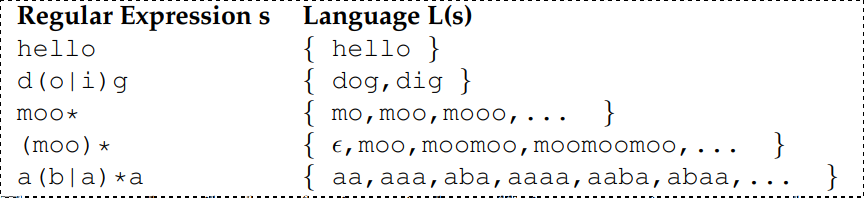
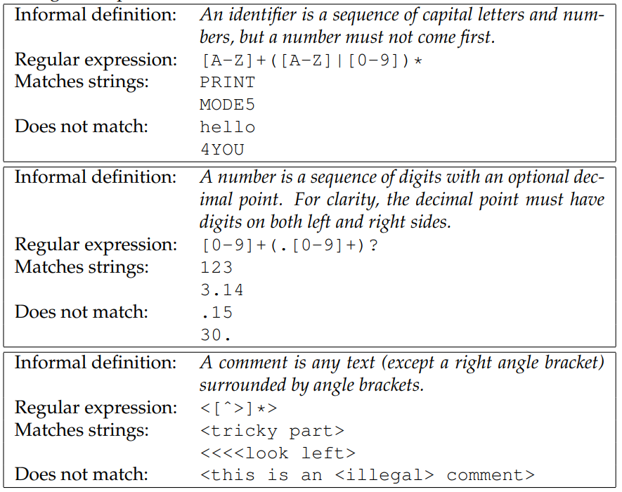
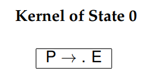
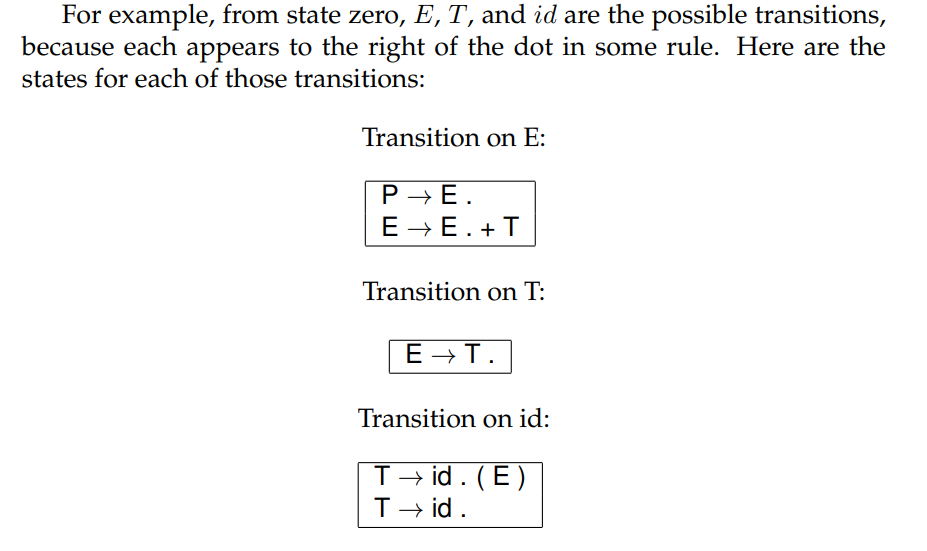

Introduction
These are my notes for the book Introduction to Compilers and Language Design.
The source repository for this website is here. Any pull requests, contributions welcome!
What is a compiler?
- A compiler translates a program in a source language to a program in a target language.
- A compiler is distinct from an interpreter, which reads in a program and then executes it directly, without emitting a translation. This is also sometimes known as a virtual machine. Languages like Python and Ruby are typically executed by an interpreter that reads the source code directly.
- Compilers and interpreters are closely related, and it is sometimes possible to exchange one for the other. For example, Java compilers translate Java source code into Java bytecode, which is an abstract form of assembly language. Some implementations of the Java Virtual Machine work as interpreters that execute one instruction at a time. Others work by translating the bytecode into local machine code, and then running the machine code directly. This is known as just in time compiling or JIT.
Why should you study compilers ?
- You will be a better programmer.
- You can create tools for debugging and translating.
- You can create new languages.
- You can contribute to existing compilers.
What language should I use
- Author thinks you should use C and use it to compile a C like language which produces assembly for a widely used processor like x86 or ARM.
A Quick Tour
The Compiler Toolchain

Stages Within a Compiler

Scanning
Kind of Tokens
- Scanning is the process of identifying tokens from the raw text source code of a program.
Most languages will have tokens in these categories:
- Keywords
- Identifiers
- Numbers
- Strings
- Comments and Whitespace
A Hand-Made Scanner
- The basic approach is to read one character at a time from the input
stream (
fgetc(fp)) and then classify it. - Hand Made scanner is usually verbose.
- For a complex language with a large number of tokens, we need a more formalized approach to defining and scanning tokens. A formal approach will allow us to have a greater confidence that token definitions do not conflict and the scanner is implemented correctly.
- The formal tools of regular expressions and finite automata allow us to state very precisely what may appear in a given token type. Then, automated tools can process these definitions, find errors or ambiguities, and produce compact, high performance code.
Regular Expressions
- Regular expressions (REs) are a language for expressing patterns.
- They were first described in the 1950s by Stephen Kleene.

Note that ϵ represents empty string.

The syntax described so far is entirely sufficient to write any regular expression. But, it is also handy to have a few helper operations built on top of the basic syntax:

Regular expressions also obey several algebraic properties, which make it possible to re-arrange them as needed for efficiency or clarity:

Some examples of regular expressions:

Finite Automata
- A finite automaton (FA) is an abstract machine that can be used to represent certain forms of computation.
- Graphically, an FA consists of a number of states (represented by numbered circles) and a number of edges (represented by labeled arrows) between those states. Each edge is labeled with one or more symbols drawn from an alphabet Σ.
- The machine begins in a start state S0. For each input symbol presented to the FA, it moves to the state indicated by the edge with the same label as the input symbol.
- Some states of the FA are known as accepting states and are indicated by a double circle. If the FA is in an accepting state after all input is consumed, then we say that the FA accepts the input.
- We say that the FA rejects the input string if it ends in a non-accepting state, or if there is no edge corresponding to the current input symbol.
- Every RE can be written as an FA, and vice versa.
- For a simple regular expression, one can construct an FA by hand.
FA for regular expression for:

FA for regular expression [a-z][a-z0-9]+:

FA for regular expression ([1-9][0-9]*)|0

Deterministic Finite Automata
- Each of the above three examples is a deterministic finite automaton (DFA).
- A DFA is a special case of an FA where every state has no more than one outgoing edge for a given symbol.
- Put another way, DFA has no ambiguity: For every combination of state and symbol there is exactly one choice of what to do next.
- DFA is easy to implement in software or hardware.
Nondeterministic Finite Automata
- The alternative to a DFA is a nondeterministic finite automaton (NFA). A NFA is a perfectly valid FA, but it has an ambiguity that makes it somewhat more difficult to work with.
- Example: Regular expression
[a-z]*ingwhich represents all lowercase ending in the suffixing. It can be represented by the following automaton:
{kind=link}
There is a ambiguity in the above automamata because the word sing
could proceed in two different ways:
- State 0 (s) -> State 1 (i) -> State 2 (n) -> Stage 3 (g)
- State 0 (s) -> State 0 (i) -> State 0 (i) -> State 0 (g)
Both ways obey the transition rules, but one results in acceptance, while the other results in rejection.
- And the above NFA becomes complicated for a word like
singing - An NFA can also have an ϵ (epsilon) transition, which represents
an empty string. This transition can be taken without consuming any
input symbols at all. For example, we could represent the regular
expression
a*(ab|ac)with this NFA:

The above NFA also presents a variety of ambiguos choices:
- From state zero, it could consume
aand stay in state zero. - From state zero, it could consume ϵ to state one.
- From state zero, it could consume ϵ to state four.
There are two common ways to interpret this ambiguity:
- The crystal ball interpretation says that NFA somehow knows what the best choice is, by some means external to the NFA. Needless to say, this isn't possible in a real implementation.
- The many-worlds interpretation suggests that NFA exists in all
allowable states
simultaneously. When the input is complete, if any of those states are accepting states, then the NFA has accepted the input. This interpretation is more useful for constructing a working NFA, or converting it to a DFA.
Let us use the many-worlds interpretation on the example above. Suppose
that the input string is aaac.
- Initial State: Initially the NFA is in state zero. Without consuming any input, it could take an epsilon transition to states one or four. So, we can consider it's initial state to be all of those simultaneously.
- Second State (after consuming
a): From state zero, it can consumeaand remain in State 0, or go to state 1 or 4 with epsilon transition. And from state one (from initial state on step 1), it can go to state 2. Similarly from state 4 (from initial step on step 1), it can go to state 5. So in the second state, it can be in state 0, 1, 4, 2 or 5 simultaneously.
NFA would traverse these states untill accepting the complete string
aaac:
{kind=link}
- In principal once can implement an NFA in software or hardware by simply keeping track of all of the possible states. But it is inefficient.
- A better approach is to convert NFA into an equivalent DFA.
Conversion Algorithms
- For every RE, there is an FA, and vice versa.
- DFA is by far the most straightfoward of the three to implement in software.

Converting REs to NFAs
- We follow the same inductive definition of regular expression as given earlier. We define automata corresponding to base cases of REs:

- If we write the concatenation of
AandBasAB, then the corresponding NFA is simplyAandBconnected by an ϵ transition.

- In a similar fashion, the alternation of
AandBwritten asA|Bcan be expressed as two automata joined by common starting and accepting nodes, all connected by ϵ transitions

- Finall, the Kleene closure
A*is constructed by taking the automaton forA, adding starting and accepting nodes, then adding ϵ transitions to allow zero or more repetitions:

Example: Convert RE a(cat|cow)* to NFA
- Step 1: Construct NFA for
catandcow(the innermost expression)

- Step 2: Construct NFA for
cat|cow

- Step 3: Construct NFA for Kleene closure
(cat|cow)*

- Step 4: Construct NFA for RE
a(cat|cow)*

Observations from the above example:
- It's complex and contains large number of epsilon transitions.
- Could be impractical to implement for a complete language that could end up having thousands of states.
- Instead, we can convert NFA into an equivalent DFA.
Converting NFAs to DFAs
- The technique to convert any NFA into an equivalent DFA is called subset construction.
- Basic idea is to create a DFA such that each state in the DFA
corresponds to multiple states in the NFA, according to the
many-worldsinterpretation.


Example of converting NFA to DFA for the regualr expression which we saw
previously: a(cat|cow)*

Before diving into each steps, let's see a concrete example of epsilon closure using the above example.
ϵ-closure(No) = {No} because No is the only state that is reachable from NFA state No by zero or more ϵ transitions.
Each steps of the algorithm:


Minimizing DFAs
- Large DFAs will consume a lot of memory.
- We can apply Hopcroft's algorithm to shrink a DFA into a smaller DFA.

{kind=link}
Observations:
- If we are in super-state (1,2,3,4) then an input of
aalways goes to state 2, which keeps us within the super-state. So, this DFA is consistent with respect toa. - From super-state (1,2,3,4) an input of
bcan either stay within the super-state or go to super-state (5). So, the DFA is inconsistent with respect tob.

Observations:
- We observe that super-state 1,2,3 is consistent with respect to
a. - But not consistent with respect to
bbecause it can either lead to state 3 or state 4. - We attempt to fix this by splitting out state 2 into its own super-state, yielding this DFA:

Limits of Finite Automata
- Not sufficient to analyze all of the structures in a problem.
- Designing a finite automaton to match an arbitrary number of nested parenthesis is impractical.
- So, we limit ourselves to using regular expressions and finite automata for the narrow purpose of identifying the words and symbols within a problem.
Using a Scanner Generator
- The program Lex developed at AT&T was one of the earliest examples of a scanner generator.
- Vern Paxson translated Lex into the C language to create Flex.
{kind=link}
To use Flex, we write a specification of the scanner that is a mixture of regular expressions, fragments of C code, and some specialized directives. The Flex program itself consumes the specification and produces regular C code that can then be compiled in the normal way.
A peculiar requirement of Flex is that we must define a function
yywrap() which returns 1 to indicate that the input is complete at the
end of the file. If we wanted to continue scanning in another file, then
yywrap() would open the next file and return 0.
Syntax
- The regular expression language accepted by Flex is very similar to that of formal regular expressions discussed above.
- The main difference is that characters that have special meaning with a regular expression (like parentheses, square brackets, and asterisks) must be escaped with a backslash or surrounded with double quotes.
- Also, a period (.) can be used to match any character at all, which is helpful for catching error conditions.
Other details
- Flex generates the scanner code, but not a complete program, so you must write a main function to go with it.
- The main program must declar as
extern
the symbols it expects to use in the generated scanner code:
yyinis the file from which text will be readyylexis the function that implements the scanner- array
yytextcontains the actual text of each token discovered
flex -o scanner.c scanner.flex
Source code
Filename: token.h
typedef enum {
TOKEN_EOF=0,
TOKEN_WHILE,
TOKEN_ADD,
TOKEN_IDENT,
TOKEN_NUMBER,
TOKEN_ERROR
} token_t;
Filename: scanner.flex
%{
#include "token.h"
%}
DIGIT [0-9]
LETTER [a-zA-Z]
%%
(" "|\t|\n) /* skip whitespace */
\+ { return TOKEN_ADD; }
while { return TOKEN_WHILE; }
{LETTER}+ { return TOKEN_IDENT; }
{DIGIT}+ { return TOKEN_NUMBER; }
. { return TOKEN_ERROR; }
%%
int yywrap() { return 1; }
Filename: main.c
#include "token.h"
#include <stdio.h>
extern FILE *yyin;
extern int yylex();
extern char *yytext;
int main() {
/* yyin = fopen("program.c","r"); */
FILE *yyin = stdin;
if(!yyin) {
printf("could not open program.c!\n");
return 1;
}
while(1) {
token_t t = yylex();
if(t==TOKEN_EOF) break;
printf("token: %d text: %s\n",t,yytext);
}
}
Sample session:
❯ ./one
hello world 32234
token: 3 text: hello
token: 3 text: world
token: 4 text: 32234
fooboar
token: 3 text: fooboar
3
token: 4 text: 3
Parsing
Overview
- To parse a computer program, we must first describe the form of valid sentences in a language. This formal statement is known as a context free grammar (CFG). Because they allow for recursion, CFGs are more powerful than regular expressions and can express a richer set of structures.
- LL(1) grammars are CFGs that can be evaluated by considering only the current rule and next token in the input stream. This property makes it easy to write a hand-coded parser known as a recursive descent parser.
- LR(1) grammars are more general and more powerful than LL(1). Nearly all useful programming languages can be written in LR(1) form. However, the parsing algorithm for LR(1) grammars is more complex and usually cannot be written by hand. Instead, it is common to use a parser generator that will accept an LR(1) grammar and automatically generate the parsing code.
Context Free Grammars
Terminal
- A terminal is a discrete symbol that can appear in the language, otherwise known as a token from the previous chapter.
- Examples: keywords, operators and identifiers.
- Convention: lower-case letters to represent terminals.
Non terminal
- A non-terminal represents a structure that can occur in a language, but is not a literal symbol.
- Examples: declarations, statements and expressions.
- Convention: Upper-case letters to represent non terminals:
Pfor programs,Sfor statement,Efor expression etc.
Sentence
- A sentence is a valid sequence of terminals in a language.
Sentential form
- A sentential form is a valid sequence of terminals and non terminals.
- Convention: Greek symbols to represent sentential forms. Example: α, β and γ to represent possibly mixed sequence of terminals and non-terminals. We will use a seqence like Y1Y2...Yn to indicate the individual symbols in a sentential form: Yi may either be a terminal or non terminal.
Context Free Grammar (CFG)
- A CFG is a list of rules that formally describe the allowable sentences in a language.
- The left hand side of each rule is always a single non-terminal.
- The right hand side of a rule is a sentential form that describes an allowable form of that non-terminal.
- Example rule:
A -> xXyindicates that the non-terminalArepresents a terminalxfollowed by a non-terminalXand a terminaly. - The right hand side of a rule can be ϵ to indicate that the rule produces nothing.
- The first rule is special: it is the top level definition of a program and it's non terminal is known as the start symbol
Sample CFG describing expressions involving addition, integers and identifiers:

For brevity, the above grammar can also be written as:
E -> E + E | ident | int
Deriving Sentences
- Each grammar describes a (possibly infinite) set of sentences, which is known as the language of the grammar.
- To prove that a given sentence is a member of that language, we must show that there exists a sequence of rule applications that connects the start symbol with the desired sentence.
- A sequence of rule applications is known as a derivation and a double arrow (⇒) is used to show that one sentential form is equal to another by applying a given rule. Example: E ⇒ int by applying rule 4 of grammer G2.
There are two approaches to derivation:
- top-down: Begin with the start symbol, and then apply rules in the CFG to expand non terminals until reaching the desired sentence.
- bottom-up: Begin with the desired setence, and then apply the rules backwards until reaching the start symbol.
For example, ident + int + int is a sentence in this language and here
is one top-down derivation to prove it:
{kind=link}
And similar proof using bottom-up derivation:

It is quite possible for two different grammars to generate the same language, in which case we describe them as having weak equivalence.
Ambiguous Grammars
- An ambiguous grammar allows for more than one possible derivation of the same sentence.
- Example: The sentence
ident + int + intcan have two derivations:

- Does it matter in the above case ? It certainly does!
- In a language like Java such a sentence
hello + 5 + 5could be interpreted as eitherhello55orhello10and that's not good. - It is possible to re-write a grammer so that it is not ambiguous. In the common case of binary operators, we can require that one side of the expression be an atomic term (T), like this:
{kind=link}
- With this change, the grammer is no longer ambigous. But it still accepts the same language as Grammer G2
- If you want to construct a grammar with more operators (division, muliplication) - then the usual approach is to construct a grammar with multiple levels that reflect the intended precedence of operators:
{kind=link}
Grammar which supports two if statements (if-then and if-then-else variant):

The above grammer is ambiguous because it allows for two derivations of this sentence:
- If E then if E then other else other
There are two derivations of this sentence:
- If E then (if E then other else other)
- If E then (if E then other) else other
LL Grammars
- LL(1) grammars are a subset of CFGs that are easy to parse with simple algorithms.
- A grammar is LL(1) if it can be parsed by considering only one non-terminal and the next token in the input stream.
To ensure a grammar is LL(1) we must do the following:
- Remove any ambiguity as shown above.
- Eliminate any left recursion.
- Eliminate any common left prefixes.
Eliminating Left recursion
LL(1) grammars cannot contain left recursion which is a rule of the form A → Aα or, more generally, any rule A → Bβ such that B ⇒ Aγ by some sequence of derivations.

Eliminating Common Left Prefixes
{kind=link}
Fixing the grammar will result in:

First and Follow Sets
- In order to construct a complete parser for an LL(1) grammar, we
must compute two sets, known as
FIRSTandFOLLOW. - Informally, FIRST(α) indicates the set of terminals (including ϵ) that could potentially appear at the beginning of any derivation of α.
- FOLLOW(A) indicates the set of terminals (including $) that could potentially occur after any derivation of non-terminal A.
- Given the contents of these two set, the LL(1) parser will always
know
which rule to pick next.
{kind=link}
Y1...Yn − 1 ⇒ ϵ means ϵ ∈ FIRST(Y1)...ϵ ∈ FIRST(Yn − 1)
{kind=link}
I also found the following source very helpful:
- jambe.con.nz source (For first sets)
- cs.ecu.edu source Archive link (For follow set, example specifically)
I personally found that working out the examples, let me to understand the above algorithm better. Always going back to the informal definition above will help you. Now let's see an example:
{kind=link}
You can also use this Haskell module to find them. (Future todo: Write a blog post about it)
Let's find out the First sets initially. Let's try to find out FIRST(P). Going back to the formal definition:
FIRST(P) is the set of terminals that being all strings given by P. Looking at the grammar, it is hard to come up for non terminal **P* since it depens on other non terminals. Let's try to move from *the non terminals at the end of the grammar:
- FIRST(F) = {(, int}
- FIRST(T') = {*, ϵ }
- FIRST(T) = {(, int } (Same as the first set of F)
- FIRST(E') = {ϵ, +}
- FIRST(E) = {(, int } (Same as the first set of T)
- FIRST(P) = {(, int } (Same as the first set of E)
Now let's find out the Follow sets. Let's try to find out FOLLOW(P). Going back to the formal definition:
FOLLOW(P) is the set of terminal that can come after non-terminal P, including $ if P occurs at the end of input.
- FOLLOW(P) = {$} (P represents the program and it includes $ since P occurs at the end of input).
- FOLLOW(E) = {),$} (For $, same logic as above)
- FOLLOW(E') = {),$} (F => (E) => (TE'), so it includes ))
- FOLLOW(T) = {),$, +}
- Same as FOLLOW(E') since E -> TE'
- Also includes
+since E => TE' => T+TE'
- FOLLOW(T') = {),$, +}
- E => TE' => FT'E'. So same as FOLLOW(E')
- FT'E' => FT'+TE', so includes +
- FOLLOW(F) = {),$,+,*}
- Same as FOLLOW(T') since T => FT'
- Also includes
*since FT' => F*FT'
Recursive Descent Parsing
- LL(1) grammars are very amenable to write simple hand-coded parsers.
- A common approach is a recursive descent parser in which there is one simple function for each non-terminal in the grammar. The body of the function follow the right hand sides of the corresponding rules: non-terminal results in a call to another parse function, while terminals result in considering the next token.
Table Driven Parsing
- An LL(1) grammar can also be parsed using generalized table driven code.
- A table driven parser requires a grammar, a parse table and a stack to represent the current set of non-terminals.
- The LL(1) parse table is used to determine which rule should be applied for any combination of non-terminal on the stack and next token on the input stream.

{kind=link}
{kind=link}
LR Grammars
- While LL(1) grammars and top-down parsing techniques are easy to work with, they are not able to represent all of the structures found in many programming languages. For more general-purpose programming languages, we must use an LR(1) grammar and associated bottom-up parsing techniques.
- LR(1) is the set of grammars that can be parsed via shift-reduce techniques with a single character of lookahead.
- LR(1) is a super-set of LL(1) and can accommodate left recursion and common left prefixes which are not permitted in LL(1).
Example of LR(1) grammar:
{kind=link}
And it's first and follow sets are these:
{kind=link}
Shift Reduce Parsing
- LR(1) grammars must be parsed using the shift-reduce parsing technique. This is a bottom-up parsing strategy that begins with the tokens and looks for rules that can be applied to reduce sentential forms into non-terminals. If there is a sequence of reductions that leads to the start symbol, then the parse is successful.
- A shift action consumes one token from the input stream and pushes it onto the stack.
- A reduce action applies one rule of the form A → α from the grammar, replacing sentential form α on the stack with the non terminal A.
Example of shift-reduce parse of the sentence id(id+id) using Grammar
G10:

In the above example, you can see that there is some action chosen at each step. To understand how these decisions are made, we must analyze LR(1) grammars in more detail.
The LR(0) Automaton
- An LR(0) automaton represents all the possible rules that are currently under consideration by a shift-reduce parser.
- Each state in the automaton consists of multiple items, which are rules augmented by a dot(.) that indicates the parser's current position in that rule. For example, the configuration E → E. + T indicates that E is currently on the stack, and + T is a possible next sequence of tokens.
- The automaton is constructed as follows. State 0 is created by taking the production for the start symbol (P→E) and adding a dot at the beginning of the right hand. This indicates that we expect to see a complete program, but have not yet consumed any symbols. This is known as the kernel of the state.

- Then, we compute the closure of the state as follows. For each item in the state with a non-terminal X immediately to the right of the dot, we add all the grammar that have X as the left hand side. The newly added items have a dot at the beginning of the right hand side.

- From this state, all of the symbols (terminals and non-terminals both) to the right of the dot are possible outgoing transitions. If the automaton takes that transition, it moves to a new state containing the matching items, with the dot moved one position to the right. The closure of the new state is computed, possibly adding new rules as described above.

{kind=link}
- The LR(0) automaton tells us the choices available at any step of
bottom up parsing. When we reach a state containing an item with a
dot at the end of the rule, that indicates a possible reduction. A
transition on a terminal that moves the dot one position to the
right indicates a possible shift. While the LR(0) automaton tells us
the available actions at each step, it does not always tell us
whichaction to take.
Two types of conflict can appear in an LR grammar:
- A shift-reduce conflict indicates a choice between a shift action and a reduce action. Example: State 4 in the above automaton
{kind=link}
- A reduce-reduce conflict indicates that two distinct rules have been completely matched, and either one could apply.
{kind=link}
The LR(0) automaton forms the basis of LR parsing, by telling us which actions are available in each state. But, it does not tell us which action to take or how to resolve shift-reduce and reduce-reduce conflicts. To do that, we must take into account some additional information.
SLR Parsing
- Simple LR(SLR) parsing is basic form of LR parsing in which we
use
FOLLOWsets to resolve conflicts in theLR(0)automaton. - In short, we take the reduction A → α only when the next token
on the input is in
FOLLOW(A). If a grammar can be parsed by this technique, we say it is an SLR grammar, which is a subset of LR(1) grammars. - Taking the example in the above automaton for State 4, there are two
possible cases:
- If the next token is
(, then we shift to state 5. - If the next token is
+,)or$, then we reduce by the ruleT -> id.
- If the next token is
- These decisions are encoded in SLR parse tables which are historically known as GOTO and ACTION.
{kind=link}
Let's follow the above algorithm to construct SLR parse table ourselves for grammar G10. Some conventions to keep in mind:
- Rn: n represents the Rule number (to which it has to reduce to).
- Sn: n represents the state number (to which it has to shift to).
- Gn: n represents the state number (to which it has to goto).
The easy way to compute is to look at the LR(0) Automaton for the grammar.
State 0
The core idea of the above algorithm is that you create the ACTION table for the terminals and the GOTO table for non terminals. Using that let's construct the table for state zero:
- A[0, id] = S4
- G[0, E] = G1
- G[0, T] = G8
State 1
- Follow(P) = $
- A[1, +] = S2
- A[0, $] = R1
State 2
- G[2, T] = G3
- A[2, id] = S4
State 3
- Follow(E) = {$, ), +}
- A[3, $] = R2
- A[3, )] = R2
- A[3, +] = R2
State 4
- Follow(T) = {$, ), +}
- A[4, (] = S5
- A[4, $] = R5
- A[4, )] = R5
- A[4, +] = R5
State 5
- A[5, id] = S4
- G[5, E] = G6
- G[5, T] = G8
State 6
- A[6, +] = S2
- A[6, )] = S7
State 7
- Follow(T) = {$, ), +}
- A[7, $] = R4
- A[7, )] = R4
- A[7, +] = R4
State 8
- Follow(E) = {$, ), +}
- A[8, $] = R3
- A[8, +] = R3
- A[8, )] = R3
And that corresponds with the SLR parse table given in the book:
{kind=link}
{kind=link}
{kind=link}
Let's try to follow the first four steps of the above algorithm:
Step 1
- Stack: 0
- Top of Stack: 0
- Token: id
- SLR parse table result = S4
Step 2
- Stack: 0 4
- Top of Stack: 4
- Token: (
- SLR parse table result = S5
Step 2
- Stack: 0 4 5
- Top of Stack 5
- Token: id
- SLR parse table result = S4
Step 3
- Stack: 0 4 5 4
- Top of Stack 4
- Token: +
- SLR parse table result = R5
- It's reduce (T->id), pop state from stack.
- s = top element from stack
- Goto[5, T] = G8
- New stack: 0 4 5 8
Limitation
- SLR is a subset of LR(1), and not all LR(1) grammars are SLR.
{kind=link}
- FOLLOW(S) = {$} and FOLLOW(V) = {=]$}
- In state 1, we can reduce by S -> id or V -> id. However, both FOLLOW(S) and FOLLOW(V ) contain $, so we cannot decide which to take when the next token is end-of-file. Even using the FOLLOW sets, there is still a reduce-reduce conflict. Therefore, Grammar G11 is not an SLR grammar
- But, if we look more closely at the possible sentences allowed by
the grammar, the distinction between the two becomes clear. Rule
S -> idwould only be applied in the case where the complete sentence isid$. If any other character follows, we applyV -> id. So the grammar is not ambigous, we need a more powerful parser.
LR(1) Parsing
- The LR(1) automaton is like the LR(0) automaton, except that each item is annotated with the set of tokens that could potentially follow it, given the current parsing state.
- This set is known as the lookahead of the item. The lookahead is always a subset of the FOLLOW of the relevant non-terminal.
{kind=link}
{kind=link}
- Now you can see how the lookahead solves the reduce-reduce conflict.
{kind=link}
One aspect of state zero is worth clarifying. When constructing the
closure of a state, we must consider all rules in the grammar, including
the rule corresponding to the item under closure. The item E -> .E + T
is initially added with a lookahead of {$}. Then, evaluating that item,
we add all rules that have E on the left hand side, adding a lookahead
of {}. So, we add E -> . E + T again, this time with a lookahead of
{}, resulting in a single item with a lookahead set of {$, +}
LALR Parsing
- The main downside to LR(1) parsing is that the LR(1) automaton can be much larger than the LR(0) automaton.
- Any two states that have the same items but differ in lookahead sets for any items are considered to be different states. The result is enormous parse tables that consume large amounts of memory and slow down the parsing algorithm.
- Lookahead LR (LALR) parsing is the practical answer to this problem.
- To construct an LALR parser, we first create the LR(1) automaton, and then merge states that have the same core. The core of a state is simply the body of an item, ignoring the lookahead.
- When several LR(1) items are merged into one LALR item, the LALR lookahead is the union of the lookaheads of the LR(1) items.
{kind=link}
- The resulting LALR automaton has the same number of states as the LR(0) automaton, but has more precise lookahead information available for each item.
Grammar Classes Revisited
{kind=link}
CFG
- A context-free grammar is any grammar whose rules have the form A →
α.
- To parse any CFG, we require a finite automaton (a parse table) and
a stack to keep track of the parse state.
- An arbitrary CFG can be ambiguous. An ambiguous CFG will result in a non-deterministic finite automaton, which is not practical to use.
LR(k)
- An LR(k) parser performs a bottom-up *L*eft to right scan of the
input and provides a *R*ight-most parse, deciding what rule to
apply next by examining the next
ktokens on the input. - A canonical LR(1) parser requires a very large finite automaton, because the possible lookaheads are encoded into the states.
- While strictly a subset of CFGs, nearly all realworld language constructs can be expressed adequately in LR(1).
LALR
- A Lookahead-LR parser is created by first constructing a canonical LR(1) parser, and then merging all itemsets that have the same core.
- This yields a much smaller finite automaton, while retaining some detailed lookahead information.
- While less powerful than canonical LR(1) in theory, LALR is usually sufficient to express real-world languages.
SLR
- A Simple-LR parser approximates an LR(1) parser by constructing the LR(0) state machine, and then relying on the FIRST and FOLLOW sets to select which rule to apply.
- SLR is simple and compact, but there are easy-to-find examples of common constructs that it cannot parse.
LL(k)
- An LL(k) parser performs a top-down *L*eft to right scan of the
input and provides a *L*eft-most parse, deciding what rule to
apply next by examining the next
ktokens on the input. - LL(1) parsers are simple and widely used because they require a table that is only O(nt) where t is the number of tokens, and n is the number of non-terminals
- LL(k) parsers are less practical for k > 1 because the size of the parse table is O(n (tk) ) in the worst case.
- They often require that a grammar be rewritten to be more amenable to the parser, and are not able to express all common language structures.
The Chomsky Hierarchy
- Named after noted linguist Noam Chomsky.
- The hierarchy describes four categories of languages (and corresponding grammars) and relates them to the abstract computing machinery necessary to recognize such a language.
{kind=link}
Regular Languages
- Regular languages are those described by regular expressions.
- Every regular expression corresponds to a finite automaton that can be used to identify all words in the corresponding language.
- As you know, a finite automaton can be implemented with the very simple mechanism of a table and a single integer to represent the current state. So, a scanner for a regular language is very easy to implement efficiently.
Context Free languages
- Context free languages are those described by context free grammars where each rule is of the form A → γ, with a single non-terminal on the left hand side, and a mix of terminals and non-terminals on the right hand side.
- We call these “context free” because the meaning of a non-terminal is the same in all places where it appears.
- As you have learned in this chapter, a CFG requires a pushdown automaton, which is achieved by coupling a finite automaton with a stack.
Context sensitive languages
- Context sensitive languages are those described by context sensitive grammars where each rule can be of the form αAβ → αγβ.
- We call these “context sensitive” because the interpretation of a non-terminal is controlled by context in which it appears.
- Context sensitive languages require a non-deterministic linear bounded automaton, which is bounded in memory consumption, but not in execution time.
- Context sensitive languages are not very practical for computer languages.
Recursively enumerable languages
- Are the least restrictive set of languages, described by rules of the form α → β where α and β can be any combination of terminals and non-terminals.
- These languages can only be recognized by a full Turing machine, and are the least practical of all.
The Chomsky Hierarchy is a specific example of a more general principle for the design of languages and compilers:
The least powerful language gives the strongest guarantees.
That is to say, if we have a problem to be solved, it should be attacked using the least expressive tool that is capable of addressing the problem. If we can solve a given problem by employing REs instead of CFGs, then we should use REs, because they consume less state, have simpler machinery, and present fewer roadblocks to a solution.
The same advice applies more broadly: assembly language is the most powerful language available in our toolbox and is capable of expressing any program that the computer is capable of executing. However, assembly language is also the most difficult to use because it gives none of the guarantees found in higher level languages. Higher level languages are less powerful than assembly language, and this is what makes them more predictable, reliable, and congenial to use.
Parsing in Practice
- While LL(1) parsers are commonly written by hand, LR(1) parsers are simply too cumbersome to do the same.
- Instead, we rely upon a parser generator to take a specification of a grammar and automatically produce the working code.
- In this chapter, we will look into Bison.
Using Bison, we will define an LALR grammar for algebraic expressions, and then employ it to create three different varieties of programs:
- A validator reads the input program and then simply informs the user whether it is a valid sentence in the language specified by the grammar.
- An interpreter reads the input program and then actually executes the program to produce a result.
- A translator reads the input program, parses it into an abstract syntax tree, and then traverses the abstract syntax tree to produce an equivalent program in a different format.
The Bison Parser Generator
- It is not practical to implement an LALR parser by hand, and so we rely on tools to automatically generate tables and code from a grammar specification.
- YACC (Yet Another Compiler Compiler) was a widely used parser generator in the Unix environment, recently supplanted by the GNU Bison parser which is generally compatible.
- Bison is designed to automatically invoke Flex as needed, so it is easy to combine the two into a complete program.
The overall structure of a Bison file is similar to that of Flex:
%{
(C PREAMBLE CODE)
%}
(declarations)
%%
(grammar rules)
%%
(C postamble code)
- The second section can contain a variety of declarations specific to
the Bison language. We will use the
%tokenkeyword to declare all of the terminals in our language.
The main body of the file contains a series of rules of the form:
expr : expr TOKEN_ADD expr
| TOKEN_INT
;
- The above code indicats that the non terminal
exprcan produce the sentenceexpr TOKEN_ADD expror single terminalTOKEN_INT. - White space is not significant, so it’s ok to arrange the rules for clarity.
- Note that the usual naming convention is reversed: since upper case is customarily used for C constants, we use lower case to indicate non-terminals.
- The resulting code creates a single function
yyparse()than returns an integer:- zero indicates a successful parse
- one indicates a parse error
- two indicates an internal problem such as memory exhaustion
yyparseassumes that there exists a functionyylexthat returns integer token types. This can be written by hand or generated automatically by Flex.
bison --defines=token.h --output=parser.c parser.bison
- The
--output=parser.coption directs Bison to write its code into the fileparser.cinstead of the crypticyy.tab.c - If your grammar has shift-reduce or reduce-reduce conflicts, Bison will happily output working code with some of the conflicting actions suppressed. Always check for conflicts before proceeding.
Filename: scanner.flex
%{
#include "token.h"
%}
DIGIT [0-9]
LETTER [a-zA-Z]
%%
(" "|\t|\n) /* skip whitespace */
{DIGIT}+ { return TOKEN_INT; }
\+ { return TOKEN_PLUS; }
\- { return TOKEN_MINUS; }
\* { return TOKEN_MUL; }
\/ { return TOKEN_DIV; }
\( { return TOKEN_LPAREN; }
\) { return TOKEN_RPAREN; }
\; { return TOKEN_SEMI; }
. { return TOKEN_ERROR; }
%%
int yywrap() { return 1; }
Filename: parser.bison
%{
#include <stdio.h>
int yylex();
void yyerror (char const *s) {
fprintf (stderr, "%s\n", s);
}
%}
%token TOKEN_INT
%token TOKEN_PLUS
%token TOKEN_MINUS
%token TOKEN_MUL
%token TOKEN_DIV
%token TOKEN_LPAREN
%token TOKEN_RPAREN
%token TOKEN_SEMI
%token TOKEN_ERROR
%%
program : expr TOKEN_SEMI;
expr : expr TOKEN_PLUS term
| expr TOKEN_MINUS term
| term
;
term : term TOKEN_MUL factor
| term TOKEN_DIV factor
| factor
;
factor: TOKEN_MINUS factor
| TOKEN_LPAREN expr TOKEN_RPAREN
| TOKEN_INT
;
%%
Filename: main.c
#include <stdio.h>
extern int yyparse();
int main()
{
if(yyparse()==0) {
printf("Parse successful!\n");
} else {
printf("Parse failed.\n");
}
}